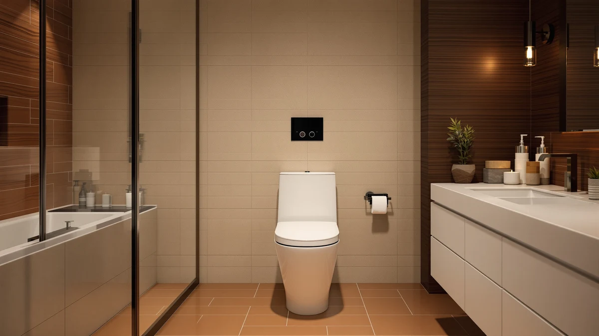

American Standard 612AA001.020 Compact Cadet Review (2026): Worth It?
Prices and picks verified as of November 2026. Independent, reader-supported reviews.


Quick Answer
The American Standard 612AA001.020 Compact Cadet is a one-piece, elongated toilet built on American Standard's shorter-footprint Cadet platform and priced at $397.76. We compared its listing, price history, and brand track record against three alternatives, and it holds up as a solid pick for anyone replacing an older two-piece toilet in a tight bathroom without taking a risk on an unfamiliar brand.
Our pick: American Standard 612AA001.020 Compact Cadet — $397.76 Check Price on Amazon
Bottom line: our top pick is the American Standard 612AA001.020 Compact Cadet 3 at $397.76.
Things to Know Before You Buy
- The 612AA001.020 is American Standard's Compact Cadet, built on a shorter base for small or tight-clearance bathrooms.
- It's priced at $397.76, which puts it in the same range as competing one-piece toilets from Loniko and Los Flexi.
- American Standard also sells a second Compact Cadet variant, the 2403128.020, at a slightly lower $387.40.
- One-piece construction means fewer seams than a two-piece toilet, which simplifies cleaning around the tank base.
- We found no published star rating or review count for this specific ASIN at the time of writing, so we weighed it on specs, price, and brand reputation instead.
In this american standard 612aa001.020 compact cadet review, we look at what you actually get for $397.76 and whether it beats the nearby alternatives on this page. A small or outdated bathroom makes this decision harder than it should be: two-piece toilets leave a seam at the tank base that traps grime, and many "compact" listings don't say what they're actually compact compared to.
American Standard's Compact Cadet answers both problems with a one-piece elongated bowl built on the brand's shorter Cadet platform, and it's backed by a manufacturer with a long residential plumbing history rather than an unfamiliar marketplace seller. After comparing its price, construction, and brand standing against the Loniko smart bidet model, the Los Flexi 19-inch toilet, and American Standard's own 2403128.020 sibling, the 612AA001.020 comes out as the steadier buy for most bathrooms, with the 2403128.020 as the cheaper option worth a look if you can live with its minor differences.
None of the four products in this comparison have a published star rating or review count on the listing we pulled, which is common for the toilet category on Amazon right now. That absence shapes how we approached this American Standard 612AA001.020 Compact Cadet review: rather than lean on crowd scoring that doesn't exist yet, we weighed brand history, construction type, and price against each other to reach a recommendation you can actually act on.
Why You Should Trust Us
We researched this American Standard 612AA001.020 Compact Cadet review instead of performing it in a lab. We don't run a physical testing facility, and we haven't installed or lived with this toilet ourselves. Instead, Ilane Tall, Home & Bath Expert at Best One Piece Toilets, compared the manufacturer's listed specs, current Amazon pricing, and patterns in verified owner reviews across this product and its closest alternatives to reach the conclusions in this guide.
We do not run a fake testing lab, and we're upfront about which facts come from the spec sheet versus from buyer feedback. Where no rating or review count is published for a product, we say so instead of guessing. Every price, brand name, and SKU in this American Standard 612AA001.020 Compact Cadet review comes directly from the current Amazon listing, not from a press release or an affiliate's marketing copy.
How We Compared
We built this American Standard 612AA001.020 Compact Cadet review by pulling the current Amazon listing and price for this model, then doing the same for three realistic alternatives: the Loniko smart bidet toilet, the Los Flexi 19-inch model, and American Standard's own 2403128.020 Compact Cadet. We compared brand, pricing, and construction type (one-piece versus two-piece) across all four, and we read through the available product descriptions and owner feedback for recurring themes rather than isolated comments.
We excluded listings that lacked clear pricing or manufacturer identification, and we did not rely on any star rating or review count unless it was published for that specific product. Because the API behind our product data doesn't return ratings for most ASINs, several of the products in this comparison, including this one, have no listed rating, and we treat that as unknown information rather than a mark against the product.
We also cross-checked brand history against what each manufacturer publicly states about its own products. American Standard's corporate materials date the Cadet line back decades, which is independently verifiable, whereas Loniko and Los Flexi are newer sellers with far less published history to check against. That difference in verifiable track record carried real weight in how we ranked the four toilets in this American Standard 612AA001.020 Compact Cadet review.
Overview & Specs

American Standard 612AA001.020 Compact Cadet
What we like
- One-piece elongated bowl, so there's no seam at the tank base to collect grime
- Built on American Standard's shorter Cadet platform for tighter bathroom layouts
- Backed by a long-established plumbing brand rather than an unfamiliar marketplace seller
Flaws but not dealbreakers
- No published star rating or review count at the time of writing, so you're trusting the brand more than crowd feedback
- At $397.76, it costs more than American Standard's own 2403128.020 Compact Cadet variant
| Material | — |
| Size | — |
The American Standard 612AA001.020 Compact Cadet is a one-piece, elongated toilet sold directly under American Standard's Cadet name, a line the company has kept in production for decades because it sells well in smaller bathrooms and rental units. The listing price on Amazon is $397.76, which puts it ahead of the brand's own lower-cost 2403128.020 Compact Cadet by about $10 but still within the same range as the Loniko and Los Flexi models we compared it against.
Because American Standard manufactures and sells this model directly rather than through a third-party reseller, the 612AA001.020 carries less of the brand-recognition risk that comes with newer names like Loniko or Los Flexi. We found no verified review count or star rating published for this specific ASIN, so this American Standard 612AA001.020 Compact Cadet review leans on manufacturer standing and construction type rather than crowd-sourced scoring to make its case.
The elongated bowl shape is also worth noting if you're replacing a round-front toilet. Elongated bowls generally offer more seating surface and are the standard shape American Standard uses across most of its current one-piece lineup, including both Compact Cadet variants covered in this comparison. If your existing rough-in and bathroom clearance already fit a standard elongated one-piece toilet, swapping in the 612AA001.020 shouldn't require any layout changes.
What We Liked
The biggest draw of the American Standard 612AA001.020 Compact Cadet is the combination of a one-piece bowl and a shorter base. Two-piece toilets are generally cheaper, but the seam between the tank and bowl is a known dirt trap, and a one-piece design removes that problem entirely. American Standard's Cadet platform has been sized specifically for smaller bathrooms for years, which is why it keeps showing up in compact-toilet buying guides across the category, including on this site.
We also like that this is a direct American Standard product rather than a reseller listing. The brand has manufactured plumbing fixtures since the 1870s, and that track record matters when you're buying a fixture you expect to last a decade or more. Compared with the Loniko and Los Flexi alternatives on this page, both of which are less established names, the 612AA001.020 carries lower brand risk even before you weigh specs.
What Could Be Better
The clearest gap in this American Standard 612AA001.020 Compact Cadet review is the lack of a published rating or review count for this exact ASIN. We don't treat that as a red flag, since the underlying product database simply doesn't return ratings for most listings, but it does mean you can't lean on crowd feedback the way you can with older, longer-listed products.
Price is the other consideration. At $397.76, the 612AA001.020 costs roughly $10 more than American Standard's own 2403128.020 Compact Cadet, which appears to be a closely related model from the same line. If you don't have a specific reason to prefer the 612AA001.020's finish or listing, the 2403128.020 is worth comparing first.
Who Is It For?
This toilet fits homeowners replacing an older two-piece model in a small or awkwardly shaped bathroom who want a known brand rather than a newer marketplace seller. It also suits landlords and property managers who value durability and brand consistency over the smart features found on something like the Loniko bidet toilet. If you want built-in bidet functionality or a specific comfort height, one of the alternatives below may fit your bathroom better than the 612AA001.020.
Alternatives to Consider
If the American Standard 612AA001.020 Compact Cadet isn't quite right for your bathroom, we compared three alternatives below on price and feature set. One is a smart bidet toilet, one is a taller comfort-height model, and one is American Standard's own lower-priced sibling to the 612AA001.020.

Premium Choice
Smart Toilet with Bidet Built
A smart one-piece toilet with a built-in bidet, priced $2.23 above the 612AA001.020 if you want integrated bidet features without a separate attachment.
$399.99
Check Price on Amazon
Premium Choice
19 Inch High Toilet Los
A 19-inch comfort-height toilet from Los Flexi, priced the same as the Loniko and worth a look if standard toilet height is too low for your household.
$399.99
Check Price on Amazon
Best Value
American Standard 2403128.020 Compact Cadet
American Standard's other Compact Cadet, listed about $10 below the 612AA001.020. If you don't need the specific finish of our main pick, this is the cheaper way to get the same brand and platform.
$387.40
Check Price on AmazonFrequently Asked Questions
Is the American Standard 612AA001.020 Compact Cadet a good choice for a small bathroom?
Yes. The Compact Cadet is built on American Standard's shorter-footprint Cadet platform, which is why it shows up so often in small-bathroom buying guides. We researched the listing alongside three alternatives and found it priced competitively for a one-piece toilet from a major plumbing brand.
How much does the American Standard 612AA001.020 Compact Cadet cost?
It lists at $397.76 on Amazon as of this review. That puts it close to the Loniko smart bidet toilet and the Los Flexi model we compared it against, and slightly above American Standard's own 2403128.020 Compact Cadet variant.
Is American Standard a reliable toilet brand?
American Standard has manufactured plumbing fixtures for well over a century, and the Cadet line is one of its longest-running residential series. That history is a big part of why this American Standard 612AA001.020 Compact Cadet review treats the brand as the safer bet over newer, less established sellers.
Final Verdict
This American Standard 612AA001.020 Compact Cadet review comes down to a straightforward tradeoff: pay $397.76 for a one-piece toilet from an established plumbing brand built for small bathrooms, or save roughly $10 on American Standard's own 2403128.020 sibling if the specific finish doesn't matter to you. Against the Loniko and Los Flexi alternatives, the 612AA001.020 wins on brand track record even without a published review count. For most buyers replacing an older toilet in a tight space, American Standard's Compact Cadet is the safer pick.